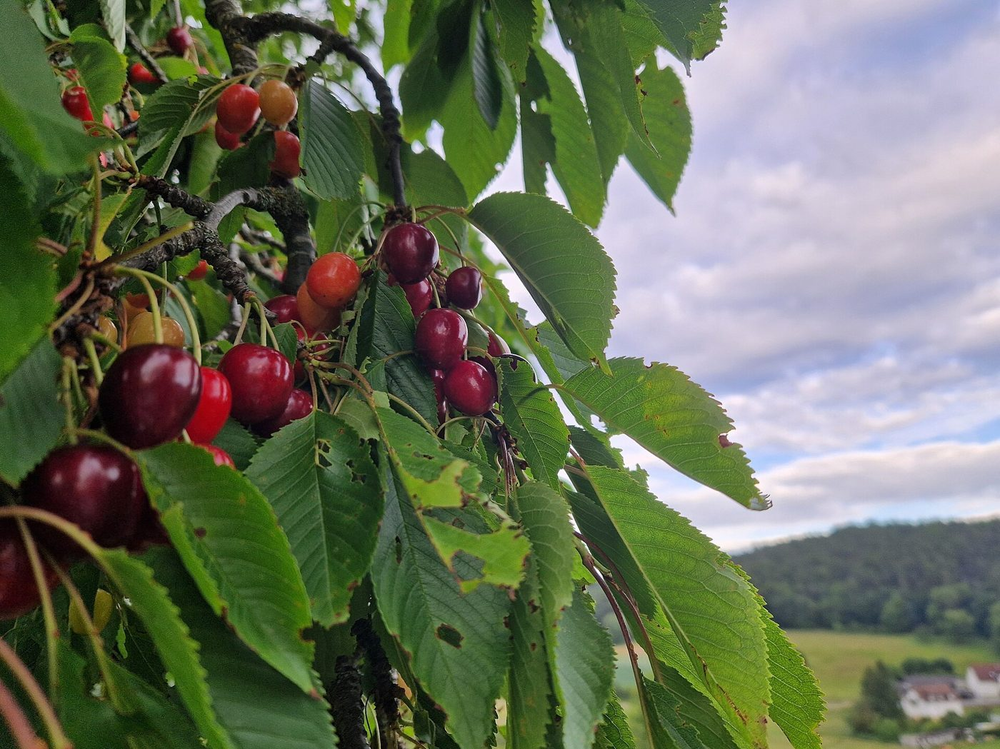

店のこと
ラバーカップの部位の配置図
お店の詳しい情報は準備中です。ここでは、制作側が考えたデザインの考え方を紹介します。


制作側の連想
番号は、部位の番号
ホームの図にある1〜6の番号は、それぞれラバーカップの部位の名前に対応します。ラバーカップの部位を図にしたもので、制作側の連想です。お店の理念・由来とは無関係で、実際の製品の仕様を示すものでもありません。
1握り(グリップ)
柄の先端にあって、手で押さえるところ。丸い形や筒の形がある。
2柄(シャフト)
握りとカップをつなぐ、長い棒の部分。木や樹脂でできている。
3差し込み口(ソケット)
柄の先を受けて、カップの頂に固定しているところ。
4カップの肩
ゴムでできたカップの、頂から丸みをもって広がっていく部分。
5縁(リップ)
カップの下の端で、面に触れて密着するふちの輪の部分。
6空洞
カップの内側にある、へこんだ空気をためる空間。
写真(イメージ)
写真(イメージ)




写真はイメージです。お店のものではありません。
確認できていること
お店の情報
| 屋号 | Breworld Coffee 大和高田焙煎所 |
|---|---|
| 所在地 | 〒635-0055 奈良県大和高田市曽大根１丁目１−１９９ |
| SNS | Instagram @breworld_coffee |
| そのほか | 準備中 |